Applying policies
Edit (pull request)Yorc provides natively the following policies:
- Monitoring policies (HTTP/TCP).
- Affinity/Anti-Affinity OpenStack ServerGroup placement policies.
- Weight-balanced and bin-packing Hosts Pool placement policies.
Let’s see how we can apply these on apps:
- Server Group Anti-affinity placement policy on OpenStack
- TCP monitoring policy
- HTTP monitoring policy
- Weight-balanced and bin-packing Hosts pool placement policies
Applying a Server Group Anti affinity placement policy on OpenStack
Let’s imagine the use case of a resilient application on OpenStack:
This application is scalable but to enhance HA, you want each app instance located in a different physical machine. So, if a breakdown occurs on one specific host, it doesn’t touch all app instances but only one.
This can be done by applying yorc.openstack.policies.ServerGroupAntiAffinity on OpenStack.
Let’s do it !
Configure location policies
After configuring your OpenStack location as described previously click on the button, select Catalog and use the search to find the ServerGroupAntiAffinity as below.
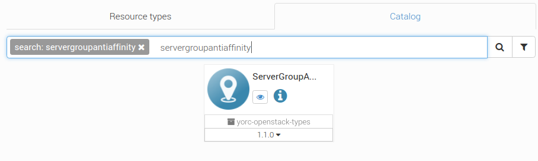
Next, drag-and-drop the policy in the Policies resources list of your OpenStack location. Rename the resource, for example ServerGroupAntiAffinity. Set the level property to host as it’s a policy placement of host type by opposition to zone or region placement.
You can set the strict property to false (by default, this is set to true) if you accept that your deployment will be successful even if some instances are co-located. Take care this is only possible if your OpenStack environment support Compute service API 2.15 or above.
You must finally have this configuration:
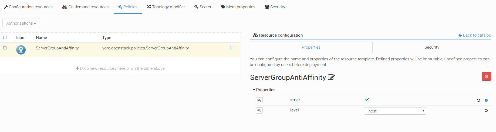
Now, your OpenStack location is configured with a Server Group anti-affinity placement policy.
Edit application topology
You can apply a Server Group anti-affinity placement policy to your application topology by using an abstract policy ; this allows to deploy your application on OpenStack, as well as on GCP, if another specific placement policy is implemented for GCP too.
Select your application and go to the Topology Editor. Click on the button on the vertical blue bar on the right. Click on the + Add policies button, search the abstract policy node AntiAffinity (org.alien4cloud.policies.AntiAffinity) from alien-base-types and drag-and-drop it on the policies list of your topology.
Set the level property to host.
Then you can select the Targets of the placement policy, i.e in this case, the node name of the compute instances you want not to be located on the same host.
Valid targets for applying ServerGroupAntiAffinity are:
- One scalable compute node template (having tosca.nodes.Compute type) with at least two as max instances number.
- At least two different compute node templates, not necessarily scalable.
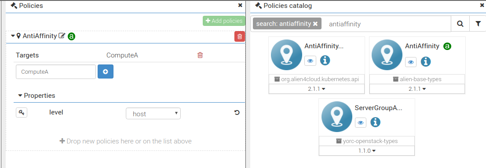
That’s it ! You just have to check the correct policy matching after choosing the Openstack location as the ServerGroupAntiAffinity derives from org.alien4cloud.policies.Affinity
Deploy the application and enjoy !
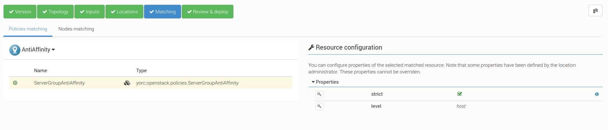
Applying TCP Monitoring policy
The TCP Monitoring policy can be used for monitoring Compute instances liveness.
To enable TCP monitoring, you need to configure the location by adding yorc.policies.monitoring.TCPMonitoring to the Policies resource list.
Moreover, in the application topology, the Compute nodes need to have yorc.policies.monitoring.TCPMonitoring policy set and configured.
Configure location policies
After configuring your OpenStack location as described previously click on the button, select Catalog and use the search to find the TCPMonitoring as below.
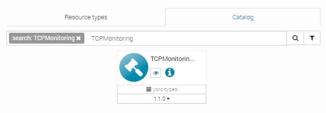
Next, drag-and-drop the policy in the Policies resources list of your location. Rename the resource, for example TCPMonitoring.
You must finally have this configuration:
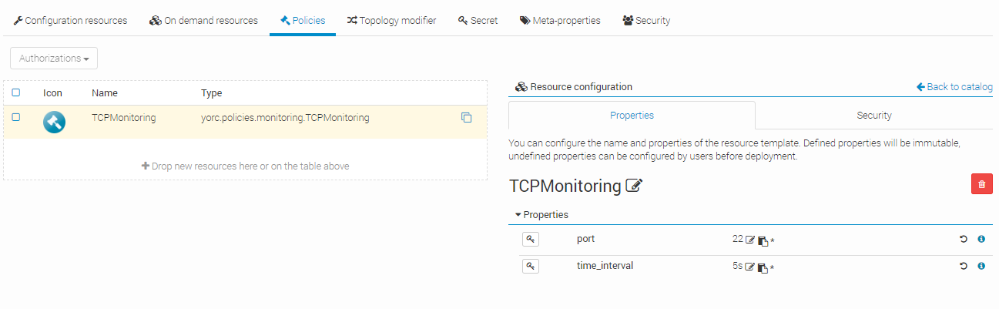
Edit application topology
Select your application and go to the Topology Editor. Click on the button on the vertical blue bar on the right. Click on the + Add policies button, search the policy node TCPMonitoring (yorc.policies.monitoring.TCPMonitoring) and drag-and-drop it on the policies list of your topology.
Then you can select the Targets of the policy, i.e in this case, the node name of the compute instances you want not to be monitored, which is Compute.
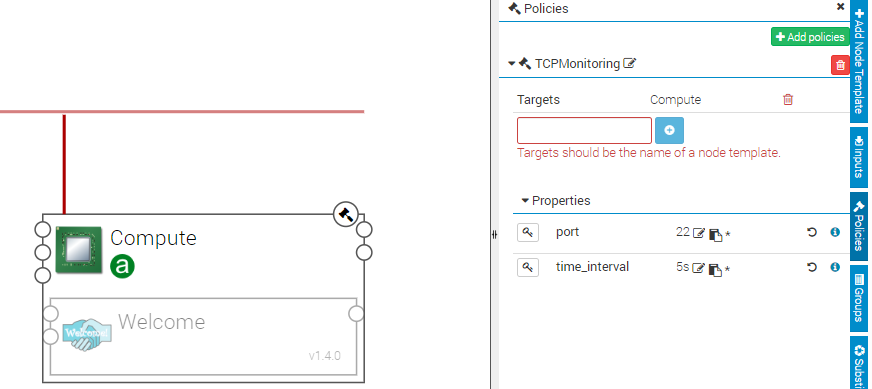
Deploy your application and check in the runtime view the logs concerning the node Compute. You should find a message like this:
[2019-04-09 15:15:31] [] [Compute] Monitoring Check is back to normal for node (Compute-0)
In case the node goes down, you should find a message like this:
[2019-04-09 15:26:31] [] [Compute] Monitoring Check returned a failure for node (Compute-0)
In case the node comes back, you should find the message:
[2019-04-09 15:28:31] [] [Compute] Monitoring Check is back to normal for node (Compute-0)
Applying HTTP Monitoring policy on a web application
The HTTP Monitoring policy can be used by a web application in order to be informed when the web server is down.
To enable HTTP monitoring, you need to configure the location by adding yorc.policies.monitoring.HTTPMonitoring policy on any location.
Moreover, the application topology, the web server nodes need to have yorc.policies.monitoring.HTTPMonitoring policy set and configured.
Configure location policies
After configuring your OpenStack location as described previously, click on the button, select Catalog and use the search to find the HTTPMonitoring as below.
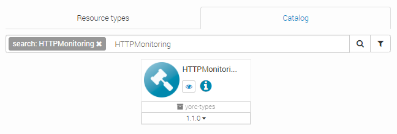
Next, drag-and-drop the policy in the Policies resources list of your location. Rename the resource, for example HTTPMonitoring.
You must finally have this configuration:
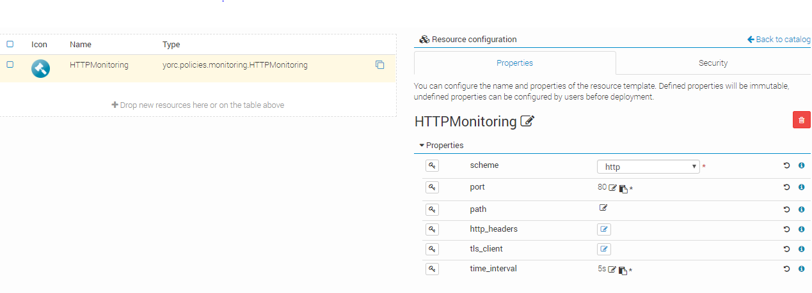
Edit application topology
Let’s deploy the Welcome Application as seen before here <welcome_app_section> and let’s configure our HTTP monitoring policy.
Select your application and go to the Topology Editor.
Click on the button on the vertical blue bar on the right.
Click on the + Add policies button, search the policy node httpMonitoring (yorc.policies.monitoring.HTTPMonitoring) from yorc-types and drag-and-drop it on the policies list of your topology.
A valid target type for applying yorc.policies.monitoring.HTTPMonitoring is tosca.nodes.SoftwareComponent.
Next, you just need to add the Welcome node template as target of the policy and set the policy properties as below:
The scheme property allows to select http or https protocol.
The port property allows to set the port of your web application you want to monitor.
The path and http_headers properties allows to specify an URL path and HTTP headers to use for sending request to the web application.
The time_interval property let you define how often the application must be checked.
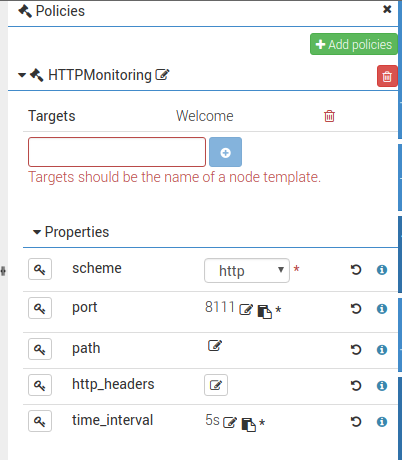
Once the application is deployed, you can simulate the Welcome web server failure by running the KillWebServer custom workflow and depending the time_interval you specified, you can rapidly (or not…) observe the Welcome node in Error State in the runtime view and the following log:
[2019-04-09 15:15:31] [] [Welcome] Monitoring Check returned a failure for node (Welcome-0)

Next, by running the startWebServer custom workflow, you restart the web server and can observe the Welcome node is backed to normal:
[2019-04-10 11:12:24] [] [Welcome] Monitoring Check is back to normal for node (Welcome-0)
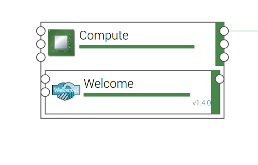
The next step will be to fix this by a self-healing policy !
Applying Hosts Pool Placement Policies
On a Hosts Pool location, you can provide hosts as Computes and specify if a host is shareable and so can be used by different applications or different Computes of the same application.
Now, with placement policies applied on an application, you can define how to choose the good host candidate for your Compute.
Two policies are available:
- yorc.policies.hostspool.BinPackingPlacement
- yorc.policies.hostspool.WeightBalancedPlacement
BinPackingPlacement is the default policy if nothing is specified.
It means the host the more allocated will be elect preferentially, i.e a host that was already allocated to the greatest number of Computes.
On the contrary, the weight-balanced placement policy allows to choose preferentially the host the less allocated in order to balance allocations between all shareable hosts.
Configure location policies
After configuring your HostsPool location as described previously click on the button, select Catalog and use the search to find policies.hostspool as below.
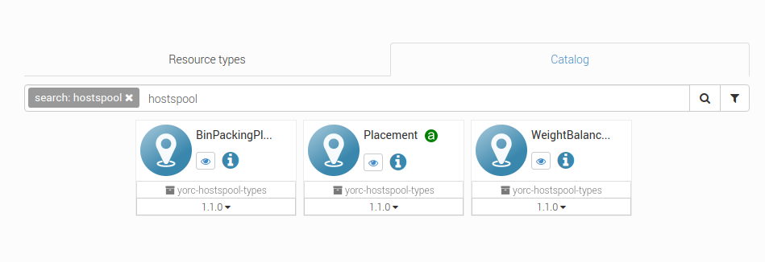
Next, drag-and-drop the BinPackingPlacement and the WeightBalancedPlacement policies in the Policies resources list of your HostsPool location.
You must finally have this configuration:
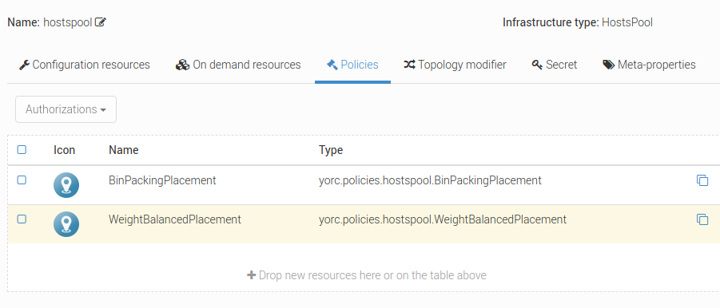
Now, your hosts pool location is configured with placement policies !
Edit application topology
You can apply a weight-balanced placement policy to your application topology by using an abstract policy: the tosca.policies.Placement.
This allows to deploy your application on Hosts pool, as well as on GCP, if another specific placement policy is implemented for GCP too.
Select your application and go to the Topology Editor. Click on the button on the vertical blue bar on the right. Click on the + Add policies button, search the abstract policy node Placement (tosca.policies.Placement) and drag-and-drop it on the policies list of your topology.
Then you can select the Targets of the placement policy, i.e in this case, the node name of the compute on which will be applied the placement policy.
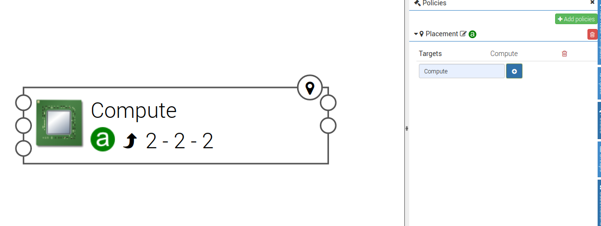
Manage current deployment
Once you choose the hosts pool location for deploying your application, in case of multiple hostspool placement policies, you have to choose the one you want during the Policies Matching step.
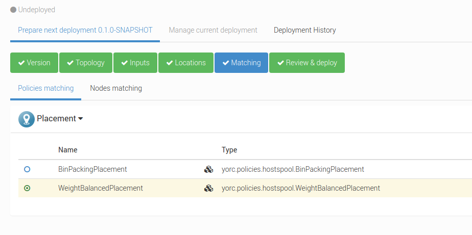
That’s it ! you can deploy your application: the weight-balanced placement policy will be applied on the 2 instances of the Compute node.
Edit (pull request)